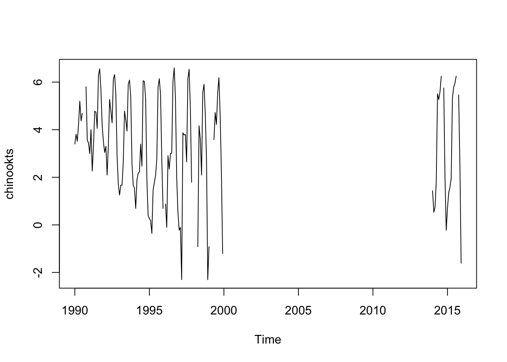

Chapter 7 Seasonality
To work with seasonal data, we need to turn our data into a ts object, which is a “time-series” object in R. This will allow us to specify the seasonality. It is important that we do not leave out any data in our time series. You data should look like so
Year Month metric.tons
2018 1 1
2018 2 2
2018 3 3
...
2019 1 4
2019 2 6
2019 3 NAThe months are in order and the years are in order.
7.0.1 Load the chinook salmon data set
load("chinook.RData")
head(chinook)| Year | Month | Species | log.metric.tons | metric.tons |
| 1990 | Jan | Chinook | 3.4 | 29.9 |
| 1990 | Feb | Chinook | 3.81 | 45.1 |
| 1990 | Mar | Chinook | 3.51 | 33.5 |
| 1990 | Apr | Chinook | 4.25 | 70 |
| 1990 | May | Chinook | 5.2 | 181 |
| 1990 | Jun | Chinook | 4.37 | 79.2 |
The data are monthly and start in January 1990. To make this into a ts object do
chinookts <- ts(chinook$log.metric.tons, start=c(1990,1), frequency=12)start is the year and month and frequency is the number of months in the year. If we had quarterly data that started in 2nd quarter of 1990, our call would be
ts(chinook, start=c(1990,2), frequency=4)If we had daily data starting on hour 5 of day 10 and each row was an hour, our call would be
ts(chinook, start=c(10,5), frequency=24)Use ?ts to see more examples of how to set up ts objects.
7.0.2 Plot seasonal data
Now that we have specified our seasonal data as a ts object, it is easy to plot because R knows what the season is.
plot(chinookts)